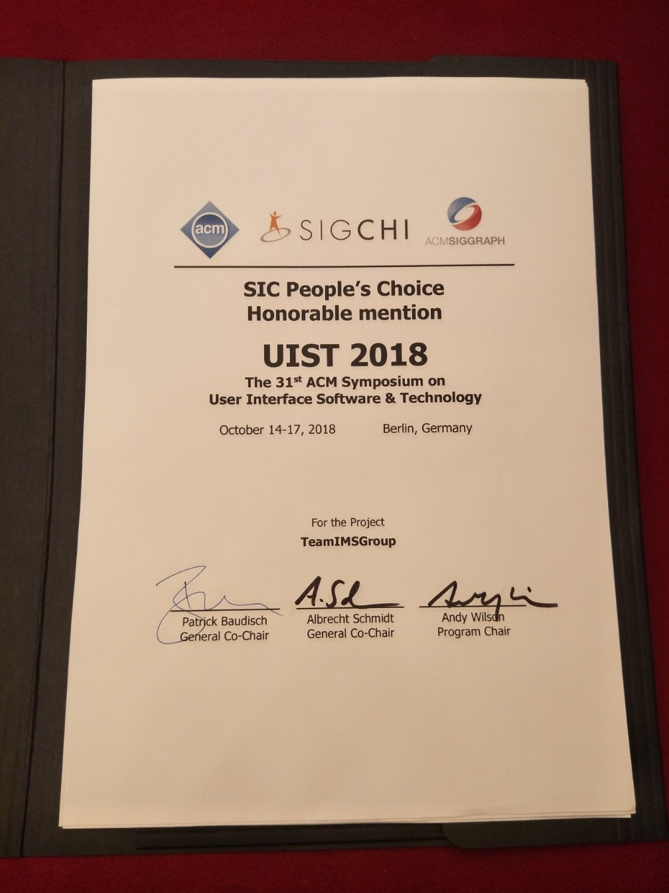
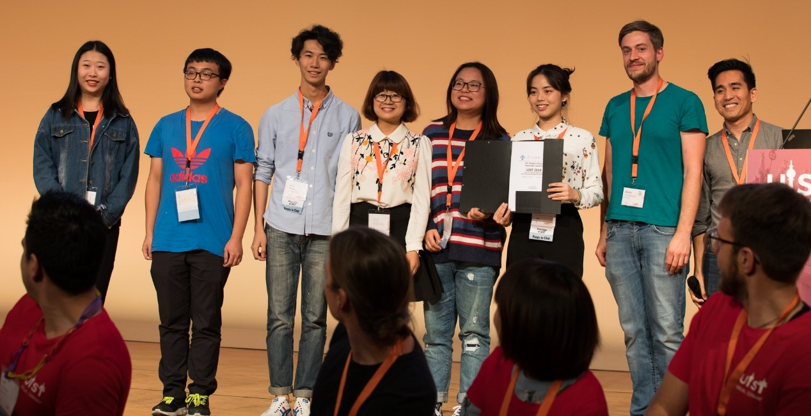
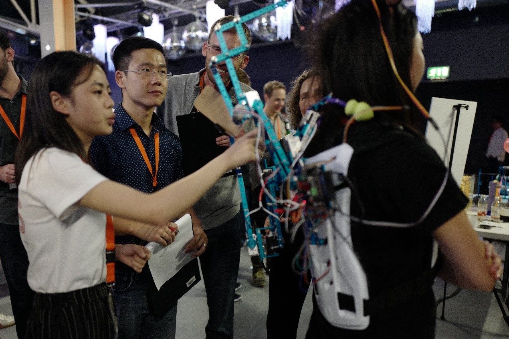

The Anmoji group won “the SIC People’s Choice Honorable mention award“ in UIST2018
2018-10-21
The ACM Symposium on User Interface Software and Technology (UIST) has take place from October 14 to 17 in Berlin ,Germany . As the CCF B conference, UIST is the premier forum for innovations in human-computer interfaces. Sponsored by ACM special interest groups on computer-human interaction (SIGCHI) and computer graphics (SIGGRAPH), UIST brings together people from diverse areas including graphical & web user interfaces, tangible & ubiquitous computing, virtual & augmented reality, multimedia, new input & output devices, and CSCW.
In the UIST SIC track, our program-Anmoji, which won the high votes in the competition, has won the SIC People’s Choice Honorable mention award with a $500.
 